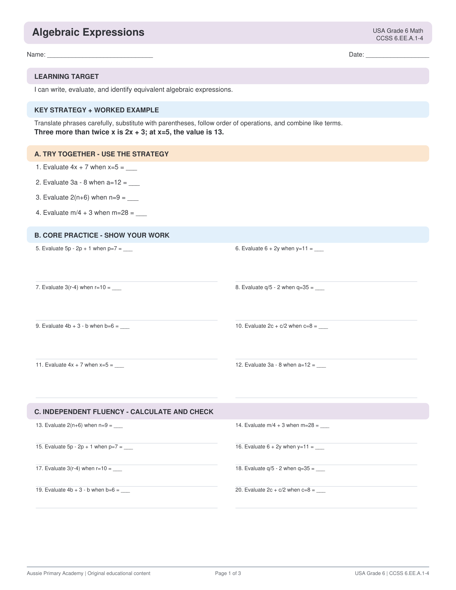

About this worksheet
This Grade 6 math worksheet builds algebraic thinking by writing and evaluating expressions with variables and whole-number exponents.
USA · Grade 6 · Math · 6.EE.A.1 / 6.EE.A.2 / 6.EE.A.4
Help Grade 6 students write and evaluate algebraic expressions — free printable PDF with answer key.

This Grade 6 math worksheet builds algebraic thinking by writing and evaluating expressions with variables and whole-number exponents.
Supports CCSS 6.EE.A.1 / 6.EE.A.2 / 6.EE.A.4 — Write and evaluate expressions with exponents and variables; identify equivalent expressions.